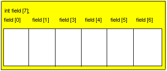

Массивы |
| До сих пор мы выполняли операции с единственным значением: это было целое число,число с плавоющей запятой или строка. Однако как поступить,когда в программе требуется выполнить обработку сотен или даже тысяч значений? Неужели придется явно деларировать сотню или тысяцу переменных и подробно записывать все необходимые операций? К счастью,нет, так как для обработи больших обьемов однородных данных существует специальный тип данных,который называют Array (массив). |
| 1.Определение массива 2.Обрашение к отдельным элементам массива 3.Обрашение к отдельным элементам массива в цикле |
| 1.Определение массива |
| Массивы- это структуры данных, которые определяться программистом самостоятельно и служат для хранения большого количества переменных с одинаковым типом данных. Давайте представим, что нам необходимо сохранить 100 значений, для чего в обычных условиях необходимо 100 переменных. Явное декларирование 100 переменных является утомительны и бестолковым занятием: |
int i1;
int i2;
...
| С помощью массива мы можем определить большое число переменных данного типа в одной строке, например: |
1. Начнем новую программу AvergeNumber.java и создадим ее каркас:
imoprt java.lang.*;
imoprt java.io.*;
public class AvergeNumber
{public static void main (String [] args) throws IOException
{
double [] array;
array= new double [10];
BufferedReader bReader = new BufferedReader (new InputStream(System.in));
String inputStr;
System.out.print("Введите 0 элемент массива");
inputStr = bReader.readLine ();array[0] =Integer.parseInt(inputStr);...}
}
Декларация массива заключается в указании типа данных, за которым следуют скобки [], а затем имя массива. Квадратные скобки сообщают компилятору, что декларируется не единственная переменная типа double, а массив таких переменных.
Однако на этапе декларирования массива не выделяется необходимая оперативная память (в отличие от декларирования обычной переменной), в связи с этим массив еще не “приведен в рабочее состояние”.
3.Выделим для массива необходимый объем оперативной памяти:
Число элементов массива указывается компилятору с помощью присваивания имени массива следующего выражения:
new DataType [Number];
В приведенном выше примере мы определили массив из 10 чисел с типом double. Ключевое слово new обозначает специальный оператор, с которым мы еще столкнемся при рассмотрении создания экземпляров классов.
| Элементы массива располагаются в оперативной памяти последовательно, образуя один блок данных. Это позволяет программисту обращаться к отдельному элементу массива с помощью его последовательного номера в массиве, который указываеться в качестве индекса в квадратных скобах после имени массива. Необходимо лишь помнить, что нумерация элементов массива начинается с нуля, то есть первый элемент массива имеет индекс 0. |

| Если количество элементов массива не известно, то следует использовать переменную Length int value = measurement.length |